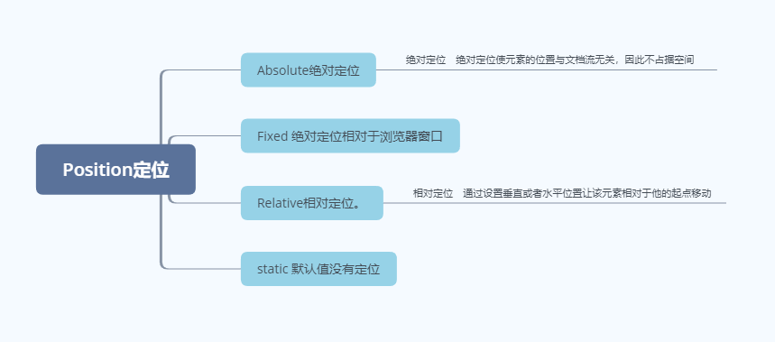

目录
1.背景介绍
2.知识剖析
3.常见问题
4.解决方案
5.编码实战
6.扩展思考
7.参考文献
8.更多讨论
position定位在我们制作页面的过程中起到了微调位置，固定某部分位置的作用。 我们学习position定位时，首先了解到的是它的四个主要用法。从下图中可以看到分别是Absolute,fixed,static和relative。 
了解position前我们先了解一下我们正常的块级元素排列方式，它是基于窗体自上而下分成一行一行排列。若要让其在一行内排列则要将 它设置成行内元素；
通常我们在不同的表现方式上会用到不同的定位方式，那么下面就具体讲解下各个定位方式的用法。
1.static定位
static定位即为静态定位：它是我们position的默认值，没有定位元素出现在正常的文档流中
（如果设置 top, bottom, left, right, z-index这些属性就不起做作了）。也就是说我们无法通过这个状态，对我们的元素做出任何位置上的变动修改。
2、relative定位
relative定位即为相对定位，通过top,bottom,left,right的设置相对于其原本位置进行定位。在这里也要注意relative会让它原本移动的地方出现文本流，就是说它原本的坑位一直存在。
可通过z-index进行层次分级。
3、absolute
absolute定位即为绝对定位，相对于第一个含有定位的（除static 定位的）父元素进行定位。就是说我们的绝对定位它是追溯到他的上一级含有定位的父元素进行判断它的位置的，
元素的位置通过 "left", "top", "right" 以及 "bottom" 属性进行设置。也可通过z-index进行层次分级。
4、fixed：
fixed定位即为固定定位，这是一个绝对定位的元素，只是它的基准是以我们的浏览器窗口
来判定的，元素的位置通过 "left", "top", "right" 以及 "bottom" 属性进行设置。也可通过z-index进行层次分级。这种定位方式我们在平常经常性的能遇到，例如，我们任务的页首和页尾部分，和一些固定式的广告。
5、其他几类定位属性：
1.position:initial中initial是把元素的属性恢复为它的默认值，可作用于任何 CSS 样式。
2.position: inherit是继承的作用，继承父级元素position定位的属性值。
3.position: unset
属性不设置。如果该属性默认是继承的，该值相当于 inherit；如果该属性是非继承属性，该值等同于 initial 不设置时的默认值。
1、当我们对一个子元素要让他确定在父元素的任意一个位置时应该怎样操作？
正文已展示
1. 要考虑一下在使用float浮动时，会和我们的position形成什么样的效果？
2. 还有没有其他方式来移动元素呢？
https://blog.csdn.net/setsunadoudou/article/details/100886308
https://www.cnblogs.com/guolao/p/9048308.html
感谢大家观看